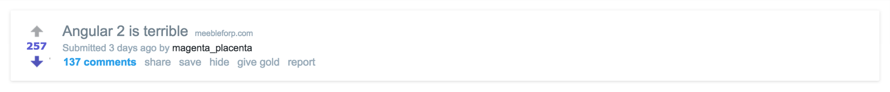

I wanted to talk to you about a problem in our community that we need to address.
I've contributed to a number of open source projects in this community (Babel, Flow, Yarn, Lerna, etc.). As a maintainer of these popular projects, I've experienced some of the best this community has to offer, as well as some of the worst.
Some of the best include being invited to conferences around the world to speak getting to travel to places I never thought I would and making friends from around the world. Some of the best friendships I've ever made have been through this open source work.
But I'm afraid it's not always like this.
Being a maintainer of a project with tens of thousands of users means you face a lot of criticism. It almost feels like you're a politician at times. Some of it isn't valid, but much of it is. Either way, the sad thing is that criticism is often communicated in an extremely negative fashion.
write OSS they said.
— Sam Saccone (@samccone) December 31, 2015
travel the world they said,
meet exciting people they said. pic.twitter.com/WzeUvfzlWE
This negativity gets to you in a way that normal criticism does not. I can talk for days about the tradeoffs made in various projects that I contribute to. I'm happy to rethink the direction we've chosen, and I'm willing to admit when I was wrong (even when it is hard). But when someone starts to insult me in mock my hard work, when they criticize me and my work in a way that is extremely negative, it gets to me. The consequences are horrible.
Let me give you an example:
When we launched Babel 6, we made an API change that we had planned for awhile. We moved from having an implicit ("works out of the box") behavior to an explicit ("will work for everyone") behavior.
Before publishing Babel 6 this was a non-controversial change that had lots of input. We communicated what the intent was months in advance and asked for community feedback.
But once it was published it was not long before articles popped up that said things like "[Babel 6 is] a lesson in how not to design software" or "[The Babel team] have destroyed the web platform". I had people mentioning me online saying I was an idiot. A wave of articles about "JavaScript fatigue" started being published.
It felt like every day I had a notification waiting to be opened about how badly we had fucked up.
Why would we continue working on it like that? Of course we burnt out on the project. I don't feel like working on Babel anymore. It went from being one of the most fun experiences in my life to making me feel terrible everyday.
"[T]he angry response has been overwhelming. Every single day I'm reading someone else rant about how awful of a job we're doing. It's been hard to stay motivated — I've practically stopped looking at issues and pull requests"
Open source maintainer burnout is a huge problem for any developer community. If the community is truly fatigued by a new set of tools every couple of years, then they need to help us fight this problem. Because in the end, this kind of criticism only ends up hurting the community.
We have a set of problems with our tools; instead of attacking the people who can help us all out the most, why not stand on their side and try helping them out? It doesn't take much, but many still don't.
I want to talk to you about an article that was written the other day titled "Angular 2 is terrible" .
For starters, that title alone is an attack on the maintainers. Surely the author wants a set of problems addressed. But why should the maintainers want to even click on that link, let alone try to address the problems?
The article goes on to raise a number of issues that they've had with Angular 2. The article is sectioned by clickbait-esque headings and filled with angry ranting that barely explains the set of problems they were having.
It also prompted threads like the one on /r/javascript which justified this behavior and piled onto the words of the author.
The article and the threads it started were so disappointing to read.
There wasn't a single productive thing about it. No positive outcomes to be had. It was a group of people ganging up together so they can yell about how frustrated they are for a little while before moving onto the next thing.
The Angular team is filled with amazing people, they have good heads on their shoulders, and they have plenty of experience in the community. So I'm sure they were able to handle this just fine.
But not everyone is able to get hit and keep going. It leaves a mark on and it weighs on the maintainers, especially new ones.
That's not to say that we shouldn't have criticisms for our tools, or that we should keep them to ourselves. I'm not writing this letter because I'm an Angular 2 fanboy. I don't work on UIs anymore, but even when I did I wasn't onboard with Angular 2.
I have actually been using it for the last few weeks though. I'm trying to learn it because I think there is value in learning about technical decisions that other have made and experiencing them first-hand.
As someone who has built a lot of UIs before, I have opinions about my experience. I'll share a few of them with you:
I could go on for a while, but I just want to get a point across: I'm not whining, I'm not insulting, I'm not complaining. I'm giving feedback.
Each of these items (with the exception of maybe #1, which I noted in order to support the later points) is an actionable task for the team to focus on. I'm offering it to them as a friendly user who wants improvement.
It's not a hard thing to do either. I focused on the problems I had, and tried to figure out their root causes. Generally, I favor documentation as the thing that needs improving because anything else can be presumptuous. I focused on what would have the most positive impact on every user's experience. Trying to communicate it in a direct way that isn't just an expression of anger.
Being a programmer can at times be a really frustrating experience. It's maddening when nothing seems to be going the way you want it to. People have very different ways of dealing with this frustration both in their software and their social interactions.
I respect that people have trouble and become frustrated. I respect that not everyone gets to be the person on their team that does all the big decision making and that it can lead to anger. I respect that this is about people's careers and is very important to them.
What I don't respect is attacks on the people who go out of their way to help. I don't respect jerks who decide to publicize their anger and don't try to have a positive impact.
I have to admit, I've been guilty of this myself many times. Anger and frustration are powerful things. It can be hard to communicate when you feel the need to express them. I always regret when I've done something like this, and I've had to force myself to apologize many times.
It's easy to justify expressing anger when trying to communicate a point. It's easy to think that you are helping others by expressing yourself so passionately. That you are passionate because you care.
But we as a community need to resist it.
Contributing to the problem doesn't need to be writing an angry article or ranting at a maintainer on Twitter. But everyone in this community is likely guilty of giving someone who has a more powerful voice.
Every time we up-vote, favorite, like, or star someone's negativity we cause their anger to be amplified. Every time we comment and pile onto what the author was saying we're contributing to a hostility targeted at the people who are only trying to make things better. An angry article with 1,000 up-votes and 600 comments hurts.
Even those who are level-headed, those with positive attitudes and good intentions, they justify this behavior in the community by not rejecting it outright.
The sub-communities that embrace this kind of behavior are awful to be involved in as a maintainer. You feel as if though you're just trying to avoid being the next target of the community's wrath.
And when this happens continuously, for weeks or months on end as it so often does, it caused the people who are most likely to fix the root problem to quit. This is the worst possible thing we as a community could work towards. Maintainers quit and often projects never recover from it.
Babel did recover, but it took almost a year for a new team to build themselves up to continue supporting it. The project only made it because of hard work by people like Henry Zhu and Logan Smyth.
My biggest contribution in over a year has been jokingly adding Guy Fieri ascii art to the project. A move which was criticized as "extremely unprofessional" with people asking "How can we trust this team after this?" — Okay... time to peace out again.
There's a lot of these "sub-communities", places like /r/javascript and Hacker News that often reward negativity more than positivity.
I mentioned before that I've been privileged with the opportunity to meet lots of open source maintainers in this community over the last few years. I've met hundreds of them. You'd probably have trouble naming a project with several thousand GitHub stars where I've never met at least one of the maintainers.
I've had thousands of conversations with this group of people. I've received a lot of advice over the years.
I've always been advised to avoid these "sub-communities" like /r/javascript and Hacker News. Maintainers say they are filled with assholes who don't know what they are talking about, angry idiots shouting at everything and everyone, cesspools, giant piles of trash burning in the wind.
What I hear most often is: "Don't let them get to you, they aren't worth it."
These communities push out the people who can help them out the most. The only people who have the power to address the problems they are so frustrated about. All because people can't control their anger and be decent human beings.
This behavior needs to stop. We need to stop rewarding anger. If not for the maintainers, we could be selfish and do it for ourselves. As it stands we are only punishing ourselves.
We need to identify the posts that tackle real problems, the ones that will have a positive impact in the community. We need to contribute to the conversations that work towards better outcomes. Fight the urge to post things that only serve to express anger. We can't continue piling onto problems without contributing something real to the conversation.
If we focus on solutions, focus on helping others, focus on sharing ideas, we'll be in a better place. We're all part of a broader community and we all have an impact on it. We can either have a positive impact or a negative one. It's entirely up to us.
This is the reality the community faces. We can either work to fix it or we can continue digging a deeper hole for ourselves.
Sincerely,
James Kyle